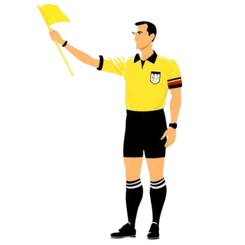

Você sabia que um dos mais erros de um jogo de futebol pode ser um erro do arbitro:
O Por que ?
Podendo ser como erros de vista erros, o propio juiz, como pegando a bola nas pernas dele, ou uma visao nao vista.
Agora na moderdernidae tem erros sera ?
A maior parte das polemicas no futebol moderno nao decorre de erros geograficos (como se a bola entrou ou nao, estava impedido), mas sim de lances subjetivos.
Falta de criterio unificado:
O que e considerado uma "carga faltosa" ou "intensidade excessiva" pode variar de um arbitro para outro, ou ate de uma competicao para outra (como a diferenca de criterios entre a America do Sul e a Europa).
A regra da mao na bola:
Esta e, sem duvida, a regra que mais sofre alteracoes e gera debates. Avaliar a "intencao", a "posicao anti natural do corpo" ou o "movimento de recolha" ainda depende puramente da interpretacao humana, mesmo revendo o lance em camera lenta.
